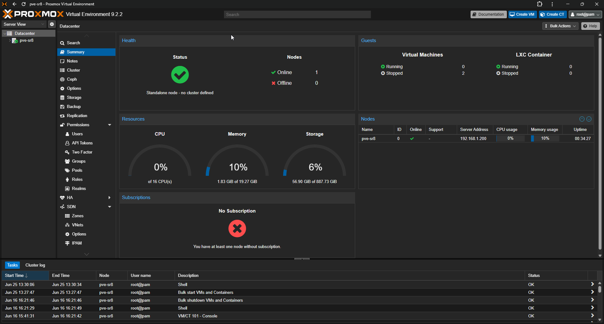
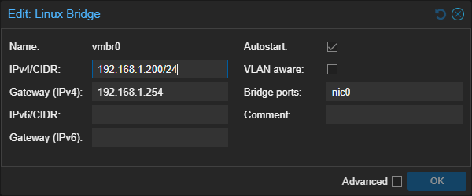
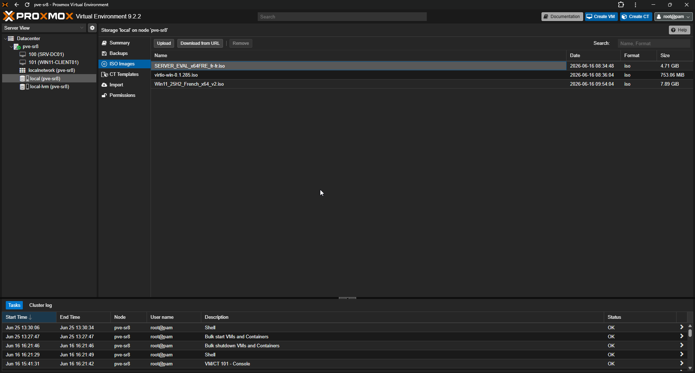

TP01 - Installation Proxmox
Théorie : Cours - Virtualisation · Cours - Hyperviseurs
Captures :99-Captures/TP01/
Objectif
Installer un hyperviseur de type 1 sur le mini-PC et préparer l'environnement de virtualisation.
À la fin du TP :
SER8
└── Proxmox VE
Pourquoi Proxmox ?
Dans une entreprise, il est rare qu'un serveur physique n'exécute qu'un seul service.
La virtualisation permet :
- d'exécuter plusieurs serveurs sur une même machine ;
- d'isoler les services ;
- de simplifier les sauvegardes ;
- de faciliter les tests.
Dans ce laboratoire, Proxmox servira à héberger :
SRV-DC01
WIN11-CLIENT01
Préparation
Télécharger :
- ISO Proxmox VE
- ISO Windows Server 2022
- ISO Windows 11
- ISO VirtIO
Préparer :
- clé USB bootable
- accès réseau filaire
Prérequis
- [v] Serveur physique compatible virtualisation (VT-x/AMD-V)
- [v] ISO Proxmox VE téléchargée
- [v] Clé USB bootable
Installation de Proxmox
Démarrer sur la clé USB. Choisir :
Install Proxmox VE
Configurer :
| Élément | Valeur |
|---|---|
| Nom d'hôte | pve-sr8.lab.local |
| Adresse IP | 192.168.1.200 |
| Passerelle | 192.168.1.254 |

Installation réussie, première connexion à l'interface Web ProxmoxDécouverte de l'interface
Explorer :
Datacenter
├── Node
├── Storage
├── Network
└── Shell
Comprendre vmbr0
Proxmox crée automatiquement vmbr0, qui agit comme un switch virtuel. Toutes les VM du laboratoire y seront connectées.

Bridge vmbr0Import des ISO
Téléverser Windows Server 2022, Windows 11 et VirtIO dans local → ISO Images.

Bibliothèque ISORésultat attendu
Proxmox
├── Stockage configuré
├── Réseau configuré
└── ISO importées
Validation
- [v] Proxmox installé et accessible (
https://192.168.1.200:8006) - [v] IP statique configurée
- [v] vmbr0 opérationnel
- [v] ISO importées
Progression
| Étape | Lien |
|---|---|
| Prérequis | Cours - Virtualisation · Cours - Hyperviseurs |
| Suite recommandée | → TP02-Creation-SRV-DC01 |
| Branches | Cours - Réseaux |
| Théorie | Cours - Virtualisation · Cours - Hyperviseurs |
Suivi : Progression